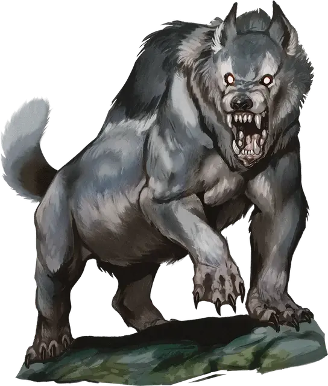

Бортак
Borthak
Огромный Монстр, обычно хаотично-злой

Класс Доспеха 16 (природный доспех)
Хиты 200 (16к12 + 96)
Скорость 30 футов
| мод | спас | ||
|---|---|---|---|
| СИЛ | 25 | +7 | +12 |
| ЛОВ | 16 | +3 | +3 |
| ТЕЛ | 22 | +6 | +11 |
| мод | спас | ||
|---|---|---|---|
| ИНТ | 4 | −3 | −3 |
| МДР | 14 | +2 | +2 |
| ХАР | 15 | +2 | +7 |
Сопротивление урону кислота, холод
Чувства тёмное зрение 60 футов, пассивное Восприятие 12
Опасность 15 (13000 опыта)
Бонус мастерства +5
Особенности
Аура ледника. В конце хода бортака скользкий лед покрывает все поверхности в пределах 10 футов от него. Этот лёд считается труднопроходимой местностью. Когда отличное от бортака существо впервые за ход перемещается в область льда или начинает в ней свой ход, оно должно преуспеть в спасброске Ловкости Сл 16 или будет сбито с ног. Лед исчезает в начале следующего хода бортака.
Перепончатые лапы. Бортак может перемещаться по ледяным поверхностям и лазать по ним, не совершая проверок характеристик. Кроме того, труднопроходимая местность, вызванная льдом или снегом, не стоит дополнительного перемещения.
Действия
Мультиатака. Бортак совершает одну атаку Укусом либо использует Кислотное отрыгивание, если может, а затем совершает две атаки Растаптыванием.
Укус. Рукопашная атака оружием: +12 к попаданию, досягаемость 5 футов, одна цель. Попадание: 16 (2к8 + 7) колющего урона плюс 7 (2к6) урона кислотой.
Растаптывание. Рукопашная атака оружием: +12 к попаданию, досягаемость 10 футов, одно сбитое с ног существо. Попадание: 11 (1к8 + 7) дробящего урона.
Кислотное отрыгивание (Перезарядка 5-6). Бортак плюет кислотой в существо, которое он видит в пределах 120 футов от себя. Цель должна преуспеть в спасброске Телосложения Сл 21. При провале она получает 24 (7к6) урона кислотой и будет отравлена до начала следующего хода бортака. При успехе существо получает только половину урона и не становится отравленной.
Реакции
Ответный удар хвостом. Когда существо в пределах 10 футов от бортака попадает по нему броском атаки, бортак бьет хвостом в отместку. Существо, попавшее атакой, и все существа в пределах 5 футов от него должны преуспеть в спасброске Ловкости Сл 16, иначе получая (2к8 + 7) дробящего урона.
Легендарные действия
Ботрак может совершить 3 легендарных действия, выбирая из представленных ниже вариантов. За один раз можно использовать только одно легендарное действие, и только в конце хода другого существа. Ботрак восстанавливает использованные легендарные действия в начале своего хода.
Перемещение. Бортак перемещается на расстояние, не превышающее его скорость, не провоцируя атаки.
Укус (стоит 2 действия). Бортак совершает одну атаку Укусом.
Описание
Бортаки — это вспыльчивые волкоподобные чудища, опустошающие северные водно-болотные угодья и высокогорные болота Кринна. Немногие животные, живущие в такой местности, могут дать отпор бортаку. Мощные челюсти, кислотная слюна и молниеносный хвост делают его высшим хищником на родной территории.
К счастью для большинства обитателей водно-болотных угодий, бортаки редко собираются в стаи. Но уже один-единственный представитель их вида может нанести ущерб всей экосистеме из-за своей сверхъестественной способности откачивать жар из земли. Тело бортака настолько эффективно поглощает тепло из окружающей среды, что может превратить небольшую долину с умеренным климатом в холодное, слякотное болото. Местные растения и животные редко выживают долго в регионе, который бортак выбирает в свои охотничьи угодья. Как только он истощает всю флору и фауну в регионе, то меняет место обитания и начинает цикл заново.